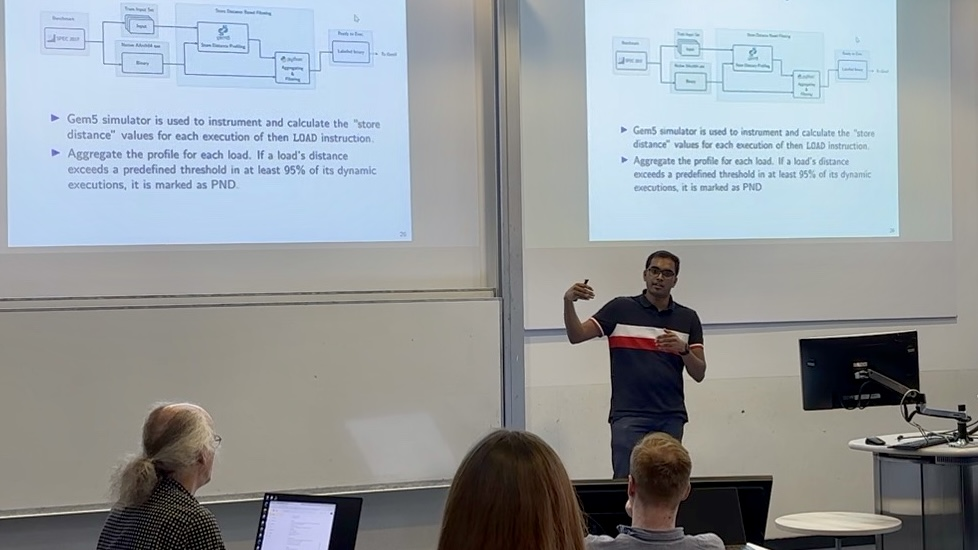
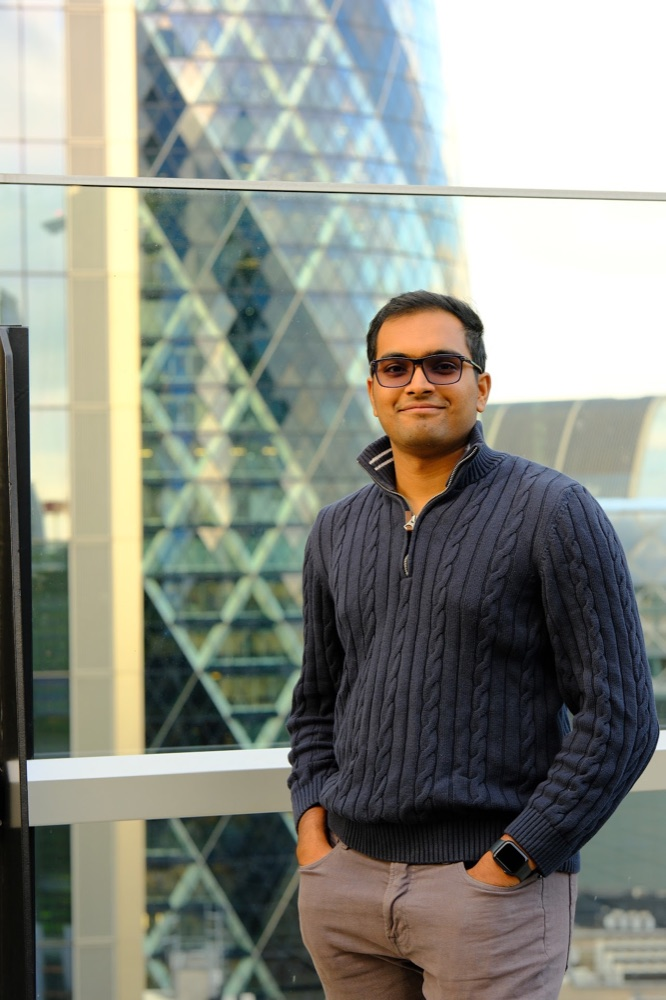

NVIDIA · Holoscan for Media
>50%
fewer GPUs per 4K60 ST 2110 stream. Using MIG, time-slicing, CUDA MPS, RDMA and GPUDirect, and still broadcast-compliant.
Open to new roles · London
System Software Engineer @ NVIDIA
I make hardware do more with less, from assembly to distributed infra.

Highlights
NVIDIA · Holoscan for Media
>50%
fewer GPUs per 4K60 ST 2110 stream. Using MIG, time-slicing, CUDA MPS, RDMA and GPUDirect, and still broadcast-compliant.
Research · HPCA 2027
−84%
false memory dependencies. Second author on PG-MDP: +4.6% IPC on a small core without a bigger predictor.
Speaker
GStreamer Conf '25
Uncompressed ST 2110 over GPU and NIC. Kernel-bypass networking with Rivermax.
Shipped product · NVIDIA
0 → 1
Designed and shipped the Holoscan for Media Installer v1. A desktop app that sets up GPU broadcast clusters on OpenShift or Kubernetes, with a Nemotron-powered help assistant.
On stage
Presenting GPU and NIC accelerated ST 2110 to a full room at GStreamer Conference 2025.
Range
Most engineers pick a layer. I've built at every one, which helps on a small team where problems don't stay in one place.
01
Pipelined, cached RISC-V CPUs in SystemVerilog. Fixed-point DSP on FPGAs.
02
C90 to RISC-V: lexing, parsing, ASTs, register allocation and code generation.
03
GPU sharing with MIG, time-slicing and CUDA MPS. RDMA and GPUDirect for live video.
04
Kubernetes, Helm, Prometheus and Grafana, running in production.
Experience
System Software Engineer · Holoscan for Media
Internship
Software Engineer Intern
MEng Electronic and Information Engineering · First Class Honours · Dean's List
Selected work
Research · HPCA 2027
Profile-guided memory dependence prediction. The compiler labels loads that never conflict, so a small core's predictor can skip them.
Open source · Talk
GPU and NIC accelerated ST 2110 for GStreamer, using kernel bypass, packet pacing and NMOS control.
Compiler · C++
A C90 to RISC-V compiler. Top 2 in the cohort on hidden tests, and the only team to pass every seen test.

Hardware · SystemVerilog
A pipelined, cached RV32I CPU with its own C++ test bench and CI.

Earlier projects: FlappyGA, an eight-player FPGA game with a cloud leaderboard, and MazeMaster, a self-balancing rover that maps a maze.
In their words
“The only team to produce a compiler capable of passing all seen test cases.”
Johan asked good questions and responded well to feedback, which combined with his technical skills and work ethic will allow him to grow into a fantastic software engineer.

Simon Staal
Software Engineer, Optiver · Compilers TA
“What sets Johan apart is his excellent communication skills.”
A highly skilled Python programmer who demonstrated exceptional capabilities in refactoring and redesigning an internal tool for performance tracing.

Nickolas Butti
Staff Engineer, Qualcomm
“A fantastic coworker and, when the situation demands, an inspiring team lead.”
His ability to break down complex problems into simple, manageable tasks has been a key factor in achieving critical project milestones.

Sohailul Alvi
Cloud Solutions Engineer, Appian · Oxford MSc
Tech specs
C++17/20, Python, C
Working knowledge: Rust, Go, Bash, SQL, SystemVerilog
CUDA MPS, Multi-Instance GPU, time-slicing, GPUDirect
Nsight Systems, perf, gdb, Valgrind
Linux performance tuning: CPU pinning, NUMA
Rivermax kernel bypass, RDMA, SR-IOV, packet pacing, PTP
ST 2110, SMPTE 291, RTP, NMOS
Wireshark (custom dissectors), tcpdump
Kubernetes custom operators (Go), GPU and Network Operators, Helm, Docker
Prometheus, Grafana, DCGM, GitHub Actions CI
LLVM passes, SVF static analysis, profile-guided optimisation, gem5 (AArch64)
C90 to RISC-V compiler
RISC-V (RV32I), FPGA, pipelining and caches
Fixed-point FIR filtering
PyTorch, TensorFlow
MEng Electronic and Information Engineering
First Class Honours · Dean's List · Imperial College London
London, UK

About
I'm a System Software Engineer at NVIDIA, based in London. I like problems where performance is the product: more streams from one GPU, more instructions through a pipeline, cleaner signal from a noisy sensor.
My MEng thesis on compiler-assisted memory dependency prediction became an HPCA 2027 paper.
I studied Electronic and Information Engineering at Imperial College London and grew up in Abu Dhabi, where I played badminton for the UAE national team. These days I unwind with blitz chess and reading about science and medicine.
I'm looking for a team that moves fast and gives engineers real ownership.
Contact
Open to full-time engineering roles, early-stage teams — systems, infrastructure or AI.